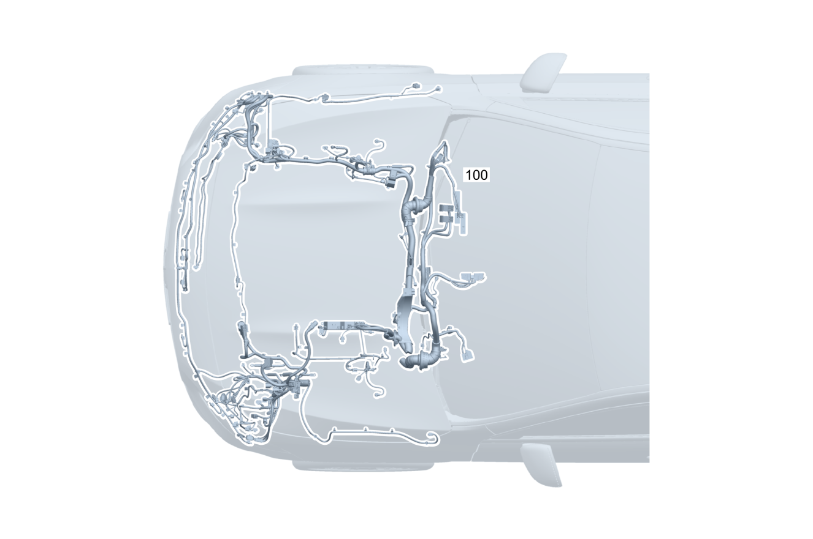

| № | Артикул | Название | Кол. | Примечание | Ограничение |
|---|---|---|---|---|---|
| 100 | A 177 540 82 24 | Электрический жгут (ELECTRICAL WIRING HARNESS) | 1 | Жгут электропроводки двигателя на кузове [-] В жгуте проводов предусмотрена возможность подключения соответствующих дополнительных опций согласно производственному номеру а/м [-] При заказе указать идент. номер | -700 |
| 120 | Q 000000000002 | - Возможен заказ только отдельных компонентов жгута проводов | 1 | Точка раздела, двигатель Рулевое управление: Влево | M260 |
| 120 | Q 000000000002 | - Возможен заказ только отдельных компонентов жгута проводов | 1 | Точка раздела, двигатель Рулевое управление: Вправо | M260 |
| 120 | Q 000000000002 | - Возможен заказ только отдельных компонентов жгута проводов | 1 | Точка раздела, двигатель Рулевое управление: Влево | M260+(494/460/835/945+830) |
| 120 | Q 000000000002 | - Возможен заказ только отдельных компонентов жгута проводов | 1 | Точка раздела, двигатель Рулевое управление: Вправо | M260+(494/460/835/945+830) |
| 120 | Q 000000000002 | - Возможен заказ только отдельных компонентов жгута проводов | 1 | Электромагнитная муфта Рулевое управление: Влево | M260+B09 |
| 120 | Q 000000000002 | - Возможен заказ только отдельных компонентов жгута проводов | 1 | Электромагнитная муфта Рулевое управление: Вправо | M260+B09 |
| 120 | Q 000000000002 | - Возможен заказ только отдельных компонентов жгута проводов | 1 | Датчик мелкодисперсной пыли Рулевое управление: Влево | P53 |
| 120 | Q 000000000002 | - Возможен заказ только отдельных компонентов жгута проводов | 1 | Звуковой сигнал Рулевое управление: Влево | P27/P59/950/B08/821/822/683L/673L |
| 120 | Q 000000000002 | - Возможен заказ только отдельных компонентов жгута проводов | 1 | Звуковой сигнал Рулевое управление: Влево | P27/P59/950/B08/821/822/683L |
| 120 | Q 000000000002 | - Возможен заказ только отдельных компонентов жгута проводов | 1 | Звуковой сигнал Рулевое управление: Вправо | P27/P59/950/B08/821/822/683L/673L |
| 120 | Q 000000000002 | - Возможен заказ только отдельных компонентов жгута проводов | 1 | Звуковой сигнал Рулевое управление: Вправо | P27/P59/950/B08/821/822/683L |
| 120 | Q 000000000002 | - Возможен заказ только отдельных компонентов жгута проводов | 1 | Датчик разрежения в тормозной системе Рулевое управление: Влево | |
| 120 | Q 000000000002 | - Возможен заказ только отдельных компонентов жгута проводов | 1 | Датчик разрежения в тормозной системе Рулевое управление: Вправо | |
| 120 | Q 000000000002 | - Возможен заказ только отдельных компонентов жгута проводов | 1 | Базовый объём для двигателя Рулевое управление: Влево | 803+053 |
| 120 | Q 000000000002 | - Возможен заказ только отдельных компонентов жгута проводов | 1 | Базовый объём для двигателя Рулевое управление: Влево | (803+053/804) |
| 120 | Q 000000000002 | - Возможен заказ только отдельных компонентов жгута проводов | 1 | Базовый объём для двигателя Рулевое управление: Влево | |
| 120 | Q 000000000002 | - Возможен заказ только отдельных компонентов жгута проводов | 1 | Базовый объём для двигателя Рулевое управление: Вправо | 803+053 |
| 120 | Q 000000000002 | - Возможен заказ только отдельных компонентов жгута проводов | 1 | Базовый объём для двигателя Рулевое управление: Вправо | (803+053/804) |
| 120 | Q 000000000002 | - Возможен заказ только отдельных компонентов жгута проводов | 1 | Базовый объём для двигателя Рулевое управление: Вправо | |
| 120 | Q 000000000002 | - Возможен заказ только отдельных компонентов жгута проводов | 1 | Датчик мелкодисперсной пыли Рулевое управление: Влево | P53+(803+053/804) |
| 120 | Q 000000000002 | - Возможен заказ только отдельных компонентов жгута проводов | 1 | Жгут проводов двигателя Рулевое управление: Влево | M260+803+053 |
| 120 | Q 000000000002 | - Возможен заказ только отдельных компонентов жгута проводов | 1 | Жгут проводов двигателя Рулевое управление: Влево | M260+(803+053/804) |
| 120 | Q 000000000002 | - Возможен заказ только отдельных компонентов жгута проводов | 1 | Жгут проводов двигателя Рулевое управление: Влево | M260 |
| 120 | Q 000000000002 | - Возможен заказ только отдельных компонентов жгута проводов | 1 | Жгут проводов двигателя Рулевое управление: Вправо | M260+803+053 |
| 120 | Q 000000000002 | - Возможен заказ только отдельных компонентов жгута проводов | 1 | Жгут проводов двигателя Рулевое управление: Вправо | M260+(803+053/804) |
| 120 | Q 000000000002 | - Возможен заказ только отдельных компонентов жгута проводов | 1 | Жгут проводов двигателя Рулевое управление: Вправо | M260 |
| 120 | Q 000000000002 | - Возможен заказ только отдельных компонентов жгута проводов | 1 | Диагностика герметичности бака Рулевое управление: Влево | M260+B01+803+053 |
| 120 | Q 000000000002 | - Возможен заказ только отдельных компонентов жгута проводов | 1 | Диагностика герметичности бака Рулевое управление: Влево | M260+B01+(803+053/804) |
| 120 | Q 000000000002 | - Возможен заказ только отдельных компонентов жгута проводов | 1 | Диагностика герметичности бака Рулевое управление: Влево | M260+B01 |
| 120 | Q 000000000002 | - Возможен заказ только отдельных компонентов жгута проводов | 1 | Диагностика герметичности бака Рулевое управление: Вправо | M260+B01+803+053 |
| 120 | Q 000000000002 | - Возможен заказ только отдельных компонентов жгута проводов | 1 | Диагностика герметичности бака Рулевое управление: Вправо | M260+B01+(803+053/804) |
| 120 | Q 000000000002 | - Возможен заказ только отдельных компонентов жгута проводов | 1 | Диагностика герметичности бака Рулевое управление: Вправо | M260+B01 |
| 120 | Q 000000000002 | - Возможен заказ только отдельных компонентов жгута проводов | 1 | Диагностика герметичности бака Рулевое управление: Влево | M260+B01+(494/460/835/830)+803+053 |
| 120 | Q 000000000002 | - Возможен заказ только отдельных компонентов жгута проводов | 1 | Диагностика герметичности бака Рулевое управление: Влево | M260+B01+(494/460/835/830)+(803+053/804) |
| 120 | Q 000000000002 | - Возможен заказ только отдельных компонентов жгута проводов | 1 | Диагностика герметичности бака Рулевое управление: Влево | M260+B01+(494/460/835) |
| 120 | Q 000000000002 | - Возможен заказ только отдельных компонентов жгута проводов | 1 | Дифференциальный датчик давления Рулевое управление: Влево | M260+(9U8/B01)+(961/964/999/3S6/4S7)+803+053 |
| 120 | Q 000000000002 | - Возможен заказ только отдельных компонентов жгута проводов | 1 | Дифференциальный датчик давления Рулевое управление: Влево | M260+(9U8/B01)+(961/964/999/3S6/4S7)+(803+053/804) |
| 120 | Q 000000000002 | - Возможен заказ только отдельных компонентов жгута проводов | 1 | Дифференциальный датчик давления Рулевое управление: Влево | M260+(9U8/B01)+(964/999/3S6/4S7) |
| 120 | Q 000000000002 | - Возможен заказ только отдельных компонентов жгута проводов | 1 | Дифференциальный датчик давления Рулевое управление: Влево | M260+(9U8/B01)+(3S6/4S7) |
| 120 | Q 000000000002 | - Возможен заказ только отдельных компонентов жгута проводов | 1 | Дифференциальный датчик давления Рулевое управление: Вправо | M260+(9U8/B01)+(961/964/999/3S6/4S7)+803+053 |
| 120 | Q 000000000002 | - Возможен заказ только отдельных компонентов жгута проводов | 1 | Дифференциальный датчик давления Рулевое управление: Вправо | M260+(9U8/B01)+(961/964/999/3S6/4S7)+(803+053/804) |
| 120 | Q 000000000002 | - Возможен заказ только отдельных компонентов жгута проводов | 1 | Дифференциальный датчик давления Рулевое управление: Вправо | M260+(9U8/B01)+(964/999/3S6/4S7) |
| 120 | Q 000000000002 | - Возможен заказ только отдельных компонентов жгута проводов | 1 | Дифференциальный датчик давления Рулевое управление: Вправо | M260+(9U8/B01)+(3S6/4S7) |
| 120 | Q 000000000002 | - Возможен заказ только отдельных компонентов жгута проводов | 1 | Датчик температуры наружного воздуха Рулевое управление: Влево | (803+053/804) |
| 120 | Q 000000000002 | - Возможен заказ только отдельных компонентов жгута проводов | 1 | Датчик температуры наружного воздуха Рулевое управление: Влево | (803+053/804) |
| 120 | Q 000000000002 | - Возможен заказ только отдельных компонентов жгута проводов | 1 | Датчик температуры наружного воздуха Рулевое управление: Влево | |
| 120 | Q 000000000002 | - Возможен заказ только отдельных компонентов жгута проводов | 1 | Датчик температуры наружного воздуха Рулевое управление: Вправо | (803+053/804) |
| 120 | Q 000000000002 | - Возможен заказ только отдельных компонентов жгута проводов | 1 | Датчик температуры наружного воздуха Рулевое управление: Вправо | (803+053/804) |
| 120 | Q 000000000002 | - Возможен заказ только отдельных компонентов жгута проводов | 1 | Датчик температуры наружного воздуха Рулевое управление: Вправо | |
| 120 | Q 000000000002 | - Возможен заказ только отдельных компонентов жгута проводов | 1 | Датчик положения педали газа Рулевое управление: Влево | (803+053/804) |
| 120 | Q 000000000002 | - Возможен заказ только отдельных компонентов жгута проводов | 1 | Датчик положения педали газа Рулевое управление: Влево | |
| 120 | Q 000000000002 | - Возможен заказ только отдельных компонентов жгута проводов | 1 | Датчик положения педали газа Рулевое управление: Вправо | (803+053/804) |
| 120 | Q 000000000002 | - Возможен заказ только отдельных компонентов жгута проводов | 1 | Датчик положения педали газа Рулевое управление: Вправо | |
| 120 | Q 000000000002 | - Возможен заказ только отдельных компонентов жгута проводов | 1 | Датчик положения педали газа Рулевое управление: Влево | 9U8+(803+053/804) |
| 120 | Q 000000000002 | - Возможен заказ только отдельных компонентов жгута проводов | 1 | Датчик положения педали газа Рулевое управление: Влево | 9U8 |
| 120 | Q 000000000002 | - Возможен заказ только отдельных компонентов жгута проводов | 1 | Датчик положения педали газа Рулевое управление: Вправо | 9U8+(803+053/804) |
| 120 | Q 000000000002 | - Возможен заказ только отдельных компонентов жгута проводов | 1 | Датчик положения педали газа Рулевое управление: Вправо | 9U8 |
| 120 | Q 000000000002 | - Возможен заказ только отдельных компонентов жгута проводов | 1 | Провод электропитания Рулевое управление: Влево | (M654/(M260/M282)+8B1)+(803+053/804) |
| 120 | Q 000000000002 | - Возможен заказ только отдельных компонентов жгута проводов | 1 | Провод электропитания Рулевое управление: Влево | (M654/(M260/M282)+8B1) |
| 120 | Q 000000000002 | - Возможен заказ только отдельных компонентов жгута проводов | 1 | Провод электропитания Рулевое управление: Вправо | (M654/(M260/M282)+8B1)+(803+053/804) |
| 120 | Q 000000000002 | - Возможен заказ только отдельных компонентов жгута проводов | 1 | Провод электропитания Рулевое управление: Вправо | (M654/(M260/M282)+8B1) |
| 120 | Q 000000000002 | - Возможен заказ только отдельных компонентов жгута проводов | 1 | Провод электропитания Рулевое управление: Влево | (M260/M282/913+M654)+(803+053/804) |
| 120 | Q 000000000002 | - Возможен заказ только отдельных компонентов жгута проводов | 1 | Провод электропитания Рулевое управление: Влево | (M260/M282/913+M654) |
| 120 | Q 000000000002 | - Возможен заказ только отдельных компонентов жгута проводов | 1 | Провод электропитания Рулевое управление: Вправо | (M260/M282/913+M654)+(803+053/804) |
| 120 | Q 000000000002 | - Возможен заказ только отдельных компонентов жгута проводов | 1 | Провод электропитания Рулевое управление: Вправо | (M260/M282/913+M654) |
| 120 | Q 000000000002 | - Возможен заказ только отдельных компонентов жгута проводов | 1 | Звуковой сигнал справа Рулевое управление: Влево | (P27/P59/950/B08/821/822/683L)+(803+053/804) |
| 120 | Q 000000000002 | - Возможен заказ только отдельных компонентов жгута проводов | 1 | Звуковой сигнал справа Рулевое управление: Влево | (P59/950/B08/821/822/683L) |
| 120 | Q 000000000002 | - Возможен заказ только отдельных компонентов жгута проводов | 1 | Звуковой сигнал справа Рулевое управление: Вправо | (P27/P59/950/B08/821/822/683L)+(803+053/804) |
| 120 | Q 000000000002 | - Возможен заказ только отдельных компонентов жгута проводов | 1 | Звуковой сигнал справа Рулевое управление: Вправо | (P59/950/B08/821/822/683L) |
| 120 | Q 000000000002 | - Возможен заказ только отдельных компонентов жгута проводов | 1 | Блок силовых предохранителей моторного отсека F150/1 to F150/3 | B01+(803+053/804) |
| 120 | Q 000000000002 | - Возможен заказ только отдельных компонентов жгута проводов | 1 | Блок силовых предохранителей моторного отсека F150/1 to F150/3 | B01 |
| 120 | Q 000000000002 | - Возможен заказ только отдельных компонентов жгута проводов | 1 | DISTRONIC PLUS Рулевое управление: Влево | 233+803+053 |
| 120 | Q 000000000002 | - Возможен заказ только отдельных компонентов жгута проводов | 1 | DISTRONIC PLUS Рулевое управление: Влево | 233+(803+053/804) |
| 120 | Q 000000000002 | - Возможен заказ только отдельных компонентов жгута проводов | 1 | DISTRONIC PLUS Рулевое управление: Влево | 233 |
| 120 | Q 000000000002 | - Возможен заказ только отдельных компонентов жгута проводов | 1 | DISTRONIC PLUS Рулевое управление: Вправо | 233+803+053 |
| 120 | Q 000000000002 | - Возможен заказ только отдельных компонентов жгута проводов | 1 | DISTRONIC PLUS Рулевое управление: Вправо | 233+(803+053/804) |
| 120 | Q 000000000002 | - Возможен заказ только отдельных компонентов жгута проводов | 1 | DISTRONIC PLUS Рулевое управление: Вправо | 233 |
| 120 | Q 000000000002 | - Возможен заказ только отдельных компонентов жгута проводов | 1 | Шинная система FlexRay Рулевое управление: Влево | (803+053/804) |
| 120 | Q 000000000002 | - Возможен заказ только отдельных компонентов жгута проводов | 1 | Шинная система FlexRay Рулевое управление: Влево | |
| 120 | Q 000000000002 | - Возможен заказ только отдельных компонентов жгута проводов | 1 | Шинная система FlexRay Рулевое управление: Вправо | (803+053/804) |
| 120 | Q 000000000002 | - Возможен заказ только отдельных компонентов жгута проводов | 1 | Шинная система FlexRay Рулевое управление: Вправо | |
| 120 | Q 000000000002 | - Возможен заказ только отдельных компонентов жгута проводов | 1 | активный капот Рулевое управление: Влево | U60 |
| 120 | Q 000000000002 | - Возможен заказ только отдельных компонентов жгута проводов | 1 | активный капот Рулевое управление: Вправо | U60 |
| 120 | Q 000000000002 | - Возможен заказ только отдельных компонентов жгута проводов | 1 | Галогенный световой прибор Рулевое управление: Влево | 620 |
| 120 | Q 000000000002 | - Возможен заказ только отдельных компонентов жгута проводов | 1 | Галогенный световой прибор Рулевое управление: Вправо | 613 |
| 120 | Q 000000000002 | - Возможен заказ только отдельных компонентов жгута проводов | 1 | Модуль статического светодиодного освещения Рулевое управление: Влево | 632 |
| 120 | Q 000000000002 | - Возможен заказ только отдельных компонентов жгута проводов | 1 | Модуль статического светодиодного освещения Рулевое управление: Влево | 459+632 |
| 120 | Q 000000000002 | - Возможен заказ только отдельных компонентов жгута проводов | 1 | Модуль статического светодиодного освещения Рулевое управление: Влево | 459+632 |
| 120 | Q 000000000002 | - Возможен заказ только отдельных компонентов жгута проводов | 1 | Модуль статического светодиодного освещения Рулевое управление: Вправо | 631 |
| 120 | Q 000000000002 | - Возможен заказ только отдельных компонентов жгута проводов | 1 | Модуль статического светодиодного освещения Рулевое управление: Вправо | 459+631 |
| 120 | Q 000000000002 | - Возможен заказ только отдельных компонентов жгута проводов | 1 | Модуль статического светодиодного освещения Рулевое управление: Влево | 632+(494/460) |
| 120 | Q 000000000002 | - Возможен заказ только отдельных компонентов жгута проводов | 1 | Модуль статического светодиодного освещения Рулевое управление: Влево | 459+632+(494/460) |
| 120 | Q 000000000002 | - Возможен заказ только отдельных компонентов жгута проводов | 1 | Модуль статического светодиодного освещения Рулевое управление: Влево | 632+(494/460) |
| 120 | Q 000000000002 | - Возможен заказ только отдельных компонентов жгута проводов | 1 | Модуль статического светодиодного освещения Рулевое управление: Влево | (459/457)+632+(494/460) |
| 120 | Q 000000000002 | - Возможен заказ только отдельных компонентов жгута проводов | 1 | Модуль динамического светодиодного освещения Рулевое управление: Влево | 640 |
| 120 | Q 000000000002 | - Возможен заказ только отдельных компонентов жгута проводов | 1 | Модуль динамического светодиодного освещения Рулевое управление: Влево | 459+640 |
| 120 | Q 000000000002 | - Возможен заказ только отдельных компонентов жгута проводов | 1 | Галогенный световой прибор Рулевое управление: Влево | 620+803+053 |
| 120 | Q 000000000002 | - Возможен заказ только отдельных компонентов жгута проводов | 1 | Галогенный световой прибор Рулевое управление: Влево | 620 |
| 120 | Q 000000000002 | - Возможен заказ только отдельных компонентов жгута проводов | 1 | Галогенный световой прибор Рулевое управление: Вправо | 613+803+053 |
| 120 | Q 000000000002 | - Возможен заказ только отдельных компонентов жгута проводов | 1 | Галогенный световой прибор Рулевое управление: Вправо | 613 |
| 120 | Q 000000000002 | - Возможен заказ только отдельных компонентов жгута проводов | 1 | Модуль статического светодиодного освещения Рулевое управление: Влево | 632+803+053 |
| 120 | Q 000000000002 | - Возможен заказ только отдельных компонентов жгута проводов | 1 | Модуль статического светодиодного освещения Рулевое управление: Влево | 632 |
| 120 | Q 000000000002 | - Возможен заказ только отдельных компонентов жгута проводов | 1 | Модуль статического светодиодного освещения Рулевое управление: Вправо | 631+803+053 |
| 120 | Q 000000000002 | - Возможен заказ только отдельных компонентов жгута проводов | 1 | Модуль статического светодиодного освещения Рулевое управление: Вправо | 631 |
| 120 | Q 000000000002 | - Возможен заказ только отдельных компонентов жгута проводов | 1 | Модуль статического светодиодного освещения Рулевое управление: Влево | 632+459+803+053 |
| 120 | Q 000000000002 | - Возможен заказ только отдельных компонентов жгута проводов | 1 | Модуль статического светодиодного освещения Рулевое управление: Влево | 632+459 |
| 120 | Q 000000000002 | - Возможен заказ только отдельных компонентов жгута проводов | 1 | Модуль статического светодиодного освещения Рулевое управление: Вправо | 631+459+803+053 |
| 120 | Q 000000000002 | - Возможен заказ только отдельных компонентов жгута проводов | 1 | Модуль статического светодиодного освещения Рулевое управление: Вправо | 631+459 |
| 120 | Q 000000000002 | - Возможен заказ только отдельных компонентов жгута проводов | 1 | Модуль динамического светодиодного освещения Рулевое управление: Влево | 642+(803+053/804) |
| 120 | Q 000000000002 | - Возможен заказ только отдельных компонентов жгута проводов | 1 | Модуль динамического светодиодного освещения Рулевое управление: Влево | 642 |
| 120 | Q 000000000002 | - Возможен заказ только отдельных компонентов жгута проводов | 1 | Модуль динамического светодиодного освещения Рулевое управление: Вправо | 641+803+053 |
| 120 | Q 000000000002 | - Возможен заказ только отдельных компонентов жгута проводов | 1 | Модуль динамического светодиодного освещения Рулевое управление: Вправо | 641 |
| 120 | Q 000000000002 | - Возможен заказ только отдельных компонентов жгута проводов | 1 | Модуль динамического светодиодного освещения Рулевое управление: Влево | 642+459+(803+053/804) |
| 120 | Q 000000000002 | - Возможен заказ только отдельных компонентов жгута проводов | 1 | Модуль динамического светодиодного освещения Рулевое управление: Влево | 642+459 |
| 120 | Q 000000000002 | - Возможен заказ только отдельных компонентов жгута проводов | 1 | Модуль динамического светодиодного освещения Рулевое управление: Вправо | 641+459+803+053 |
| 120 | Q 000000000002 | - Возможен заказ только отдельных компонентов жгута проводов | 1 | Модуль динамического светодиодного освещения Рулевое управление: Вправо | 641+459 |
| 120 | Q 000000000002 | - Возможен заказ только отдельных компонентов жгута проводов | 1 | Датчик качества воздуха и автономный отопитель Рулевое управление: Влево | 228+581 |
| 120 | Q 000000000002 | - Возможен заказ только отдельных компонентов жгута проводов | 1 | Датчик качества воздуха и автономный отопитель Рулевое управление: Вправо | 228+581 |
| 120 | Q 000000000002 | - Возможен заказ только отдельных компонентов жгута проводов | 1 | Датчик качества воздуха и автономный отопитель Рулевое управление: Влево | 581/700 |
| 120 | Q 000000000002 | - Возможен заказ только отдельных компонентов жгута проводов | 1 | Датчик качества воздуха и автономный отопитель Рулевое управление: Влево | 581/830 |
| 120 | Q 000000000002 | - Возможен заказ только отдельных компонентов жгута проводов | 1 | Датчик качества воздуха и автономный отопитель Рулевое управление: Вправо | 581 |
| 120 | Q 000000000002 | - Возможен заказ только отдельных компонентов жгута проводов | 1 | Датчик качества воздуха и автономный отопитель Рулевое управление: Влево | 228 |
| 120 | Q 000000000002 | - Возможен заказ только отдельных компонентов жгута проводов | 1 | Датчик качества воздуха и автономный отопитель Рулевое управление: Вправо | 228 |
| 120 | Q 000000000002 | - Возможен заказ только отдельных компонентов жгута проводов | 1 | Автономный отопитель | 228+(M260/M282/M608) |
| 120 | Q 000000000002 | - Возможен заказ только отдельных компонентов жгута проводов | 1 | Автономный отопитель | 228+(M260/M282) |
| 120 | Q 000000000002 | - Возможен заказ только отдельных компонентов жгута проводов | 1 | Циркуляционный насос охлаждающей жидкости Рулевое управление: Влево | 228/M608/M654/581 |
| 120 | Q 000000000002 | - Возможен заказ только отдельных компонентов жгута проводов | 1 | Циркуляционный насос охлаждающей жидкости Рулевое управление: Влево | 228/M654/581 |
| 120 | Q 000000000002 | - Возможен заказ только отдельных компонентов жгута проводов | 1 | Циркуляционный насос охлаждающей жидкости Рулевое управление: Вправо | 228/M608/M654/581 |
| 120 | Q 000000000002 | - Возможен заказ только отдельных компонентов жгута проводов | 1 | Циркуляционный насос охлаждающей жидкости Рулевое управление: Вправо | 228/M654/581 |
| 120 | Q 000000000002 | - Возможен заказ только отдельных компонентов жгута проводов | 1 | Циркуляционный насос охлаждающей жидкости Рулевое управление: Влево | 801+(M282/M260)+228+581 |
| 120 | Q 000000000002 | - Возможен заказ только отдельных компонентов жгута проводов | 1 | Циркуляционный насос охлаждающей жидкости Рулевое управление: Влево | (M282/M260)+228+581 |
| 120 | Q 000000000002 | - Возможен заказ только отдельных компонентов жгута проводов | 1 | Циркуляционный насос охлаждающей жидкости Рулевое управление: Вправо | 801+(M282/M260)+228+581 |
| 120 | Q 000000000002 | - Возможен заказ только отдельных компонентов жгута проводов | 1 | Циркуляционный насос охлаждающей жидкости Рулевое управление: Вправо | (M282/M260)+228+581 |
| 120 | Q 000000000002 | - Возможен заказ только отдельных компонентов жгута проводов | 1 | Обогреваемый трубопровод омывающей жидкости Рулевое управление: Влево | 875 |
| 120 | Q 000000000002 | - Возможен заказ только отдельных компонентов жгута проводов | 1 | Обогреваемый трубопровод омывающей жидкости Рулевое управление: Вправо | 875 |
| 120 | Q 000000000002 | - Возможен заказ только отдельных компонентов жгута проводов | 1 | Топливный насос автономного отопителя Рулевое управление: Влево | 228 |
| 120 | Q 000000000002 | - Возможен заказ только отдельных компонентов жгута проводов | 1 | Топливный насос автономного отопителя Рулевое управление: Влево | 228 |
| 120 | Q 000000000002 | - Возможен заказ только отдельных компонентов жгута проводов | 1 | Топливный насос автономного отопителя Рулевое управление: Вправо | 228 |
| 120 | Q 000000000002 | - Возможен заказ только отдельных компонентов жгута проводов | 1 | Датчик концентрации вредных веществ Рулевое управление: Влево | (581/830)+803+053 |
| 120 | Q 000000000002 | - Возможен заказ только отдельных компонентов жгута проводов | 1 | Датчик концентрации вредных веществ Рулевое управление: Влево | 581 |
| 120 | Q 000000000002 | - Возможен заказ только отдельных компонентов жгута проводов | 1 | Датчик концентрации вредных веществ Рулевое управление: Вправо | 581+803+053 |
| 120 | Q 000000000002 | - Возможен заказ только отдельных компонентов жгута проводов | 1 | Датчик концентрации вредных веществ Рулевое управление: Вправо | 581 |
| 120 | Q 000000000002 | - Возможен заказ только отдельных компонентов жгута проводов | 1 | Обогреваемый трубопровод омывающей жидкости Рулевое управление: Влево | 875+803+053 |
| 120 | Q 000000000002 | - Возможен заказ только отдельных компонентов жгута проводов | 1 | Обогреваемый трубопровод омывающей жидкости Рулевое управление: Влево | 875 |
| 120 | Q 000000000002 | - Возможен заказ только отдельных компонентов жгута проводов | 1 | Обогреваемый трубопровод омывающей жидкости Рулевое управление: Вправо | 875+803+053 |
| 120 | Q 000000000002 | - Возможен заказ только отдельных компонентов жгута проводов | 1 | Обогреваемый трубопровод омывающей жидкости Рулевое управление: Вправо | 875 |
| 120 | Q 000000000002 | - Возможен заказ только отдельных компонентов жгута проводов | 1 | Automatic transmission pump Рулевое управление: Влево | (426/429)+803+053 |
| 120 | Q 000000000002 | - Возможен заказ только отдельных компонентов жгута проводов | 1 | Automatic transmission pump Рулевое управление: Влево | (426/429) |
| 120 | Q 000000000002 | - Возможен заказ только отдельных компонентов жгута проводов | 1 | Automatic transmission pump Рулевое управление: Вправо | (426/429)+803+053 |
| 120 | Q 000000000002 | - Возможен заказ только отдельных компонентов жгута проводов | 1 | Automatic transmission pump Рулевое управление: Вправо | (426/429) |
| 125 | A 177 540 26 25 | - Электрический жгут (ELECTRICAL WIRING HARNESS) | 1 | Базовый жгут электропроводки, моторный отсек Рулевое управление: Влево | |
| 125 | A 177 540 96 37 | - Электрический жгут (ELECTRICAL WIRING HARNESS) | 1 | Базовый жгут электропроводки, моторный отсек Рулевое управление: Влево | |
| 125 | A 177 540 27 25 | - Электрический жгут (ELECTRICAL WIRING HARNESS) | 1 | Базовый жгут электропроводки, моторный отсек Рулевое управление: Вправо | |
| 125 | A 177 540 97 37 | - Электрический жгут (ELECTRICAL WIRING HARNESS) | 1 | Базовый жгут электропроводки, моторный отсек Рулевое управление: Вправо | |
| 130 | A 177 540 44 42 | - Электрический жгут (ELECTRICAL WIRING HARNESS) | 1 | Преобразователь DC/DC | M260+B01+(803+053/804) |
| 130 | A 177 540 44 42 | - Электрический жгут (ELECTRICAL WIRING HARNESS) | 1 | Преобразователь DC/DC | M260+B01 |
| 130 | A 177 540 44 42 | - Электрический жгут (ELECTRICAL WIRING HARNESS) | 1 | Преобразователь DC/DC | M260+B01+803+053 |
| 170 | A 177 540 07 20 | - Электрический жгут (ELECTRICAL WIRING HARNESS) | 1 | Пиропредохранитель Рулевое управление: Влево | |
| 170 | A 177 540 32 16 | - Электрический жгут (ELECTRICAL WIRING HARNESS) | 1 | Пиропредохранитель Рулевое управление: Вправо | |
| 170 | A 177 540 92 37 | - Электрический жгут (ELECTRICAL WIRING HARNESS) | 1 | Пиропредохранитель Рулевое управление: Влево | 801 |
| 170 | A 177 540 92 37 | - Электрический жгут (ELECTRICAL WIRING HARNESS) | 1 | Пиропредохранитель Рулевое управление: Влево | |
| 170 | A 177 540 93 37 | - Электрический жгут (ELECTRICAL WIRING HARNESS) | 1 | Пиропредохранитель Рулевое управление: Вправо | 801 |
| 170 | A 177 540 93 37 | - Электрический жгут (ELECTRICAL WIRING HARNESS) | 1 | Пиропредохранитель Рулевое управление: Вправо | |
| 190 | A 177 540 87 13 | - Электрический жгут (ELECTRICAL WIRING HARNESS) | 1 | Провод электропитания F150/1*A4 TO F152/4*A1 Рулевое управление: Влево | M654/494/460 |
| 190 | A 177 540 88 13 | - Электрический жгут (ELECTRICAL WIRING HARNESS) | 1 | Провод электропитания F150/1*A4 TO F152/4*A1 Рулевое управление: Вправо | M654/(M282/M260)+8B1 |
| 190 | A 177 540 89 13 | - Электрический жгут (ELECTRICAL WIRING HARNESS) | 1 | Провод электропитания F150/1*A4 TO F152/4*A1 Рулевое управление: Влево | (M654/M608)+913/M260/M282/M139 |
| 190 | A 177 540 89 13 | - Электрический жгут (ELECTRICAL WIRING HARNESS) | 1 | Провод электропитания F150/1*A4 TO F152/4*A1 Рулевое управление: Влево | (M654/M608)+913/M260/M282 |
| 190 | A 177 540 89 13 | - Электрический жгут (ELECTRICAL WIRING HARNESS) | 1 | Провод электропитания F150/1*A4 TO F152/4*A1 Рулевое управление: Влево | M654+913/M260/M282 |
| 190 | A 177 540 90 13 | - Электрический жгут (ELECTRICAL WIRING HARNESS) | 1 | Провод электропитания F150/1*A4 TO F152/4*A1 Рулевое управление: Вправо | (M654/M608)+913/M260/M282/M139 |
| 190 | A 177 540 90 13 | - Электрический жгут (ELECTRICAL WIRING HARNESS) | 1 | Провод электропитания F150/1*A4 TO F152/4*A1 Рулевое управление: Вправо | (M654/M608)+913/M260/M282 |
| 190 | A 177 540 90 13 | - Электрический жгут (ELECTRICAL WIRING HARNESS) | 1 | Провод электропитания F150/1*A4 TO F152/4*A1 Рулевое управление: Вправо | M654+913/M260/M282 |
| 190 | A 177 540 87 13 | - Электрический жгут (ELECTRICAL WIRING HARNESS) | 1 | Провод электропитания F150/1*A4 TO F152/4*A1 Рулевое управление: Влево | M260+(460/494) |
| 190 | A 177 540 87 13 | - Электрический жгут (ELECTRICAL WIRING HARNESS) | 1 | Провод электропитания F150/1*A4 TO F152/4*A1 Рулевое управление: Влево | M260+(494/460)/(M260/M282)+8B1 |
| 200 | A 177 540 91 04 | - Электрический жгут (ELECTRICAL WIRING HARNESS) | 1 | Заслонка в выпускном тракте для снижения шумности Рулевое управление: Влево | M260 |
| 200 | A 177 540 94 27 | - Электрический жгут (ELECTRICAL WIRING HARNESS) | 1 | Заслонка в выпускном тракте для снижения шумности Рулевое управление: Влево | M260 |
| 200 | Q 000000000002 | - Возможен заказ только отдельных компонентов жгута проводов | 1 | Заслонка в выпускном тракте для снижения шумности Рулевое управление: Вправо | M260 |
| 200 | Q 000000000002 | - Возможен заказ только отдельных компонентов жгута проводов | 1 | Заслонка в выпускном тракте для снижения шумности Рулевое управление: Вправо | M260 |
| 220 | A 177 540 56 24 | - Электрический жгут (ELECTRICAL WIRING HARNESS) | 1 | Сажевый фильтр бензинового двигателя Рулевое управление: Влево | M260+(598/961) |
| 220 | A 177 540 57 24 | - Электрический жгут (ELECTRICAL WIRING HARNESS) | 1 | Сажевый фильтр бензинового двигателя Рулевое управление: Вправо | M260+(598/961) |
| 220 | A 177 540 12 41 | - Электрический жгут (ELECTRICAL WIRING HARNESS) | 1 | Сажевый фильтр бензинового двигателя Рулевое управление: Влево | 801+M260+999 |
| 220 | A 177 540 12 41 | - Электрический жгут (ELECTRICAL WIRING HARNESS) | 1 | Сажевый фильтр бензинового двигателя Рулевое управление: Влево | M260+999 |
| 220 | A 177 540 13 41 | - Электрический жгут (ELECTRICAL WIRING HARNESS) | 1 | Сажевый фильтр бензинового двигателя Рулевое управление: Вправо | 801+M260+999 |
| 220 | A 177 540 13 41 | - Электрический жгут (ELECTRICAL WIRING HARNESS) | 1 | Сажевый фильтр бензинового двигателя Рулевое управление: Вправо | M260+999 |
| 320 | A 177 540 53 52 | - Электрический жгут | 1 | Выключатель стоп\-сигнала Рулевое управление: Влево | 803+053 |
| 320 | A 177 540 53 52 | - Электрический жгут | 1 | Выключатель стоп\-сигнала Рулевое управление: Влево | (803+053/804) |
| 320 | A 177 540 53 52 | - Электрический жгут | 1 | Выключатель стоп\-сигнала Рулевое управление: Влево | |
| 320 | A 177 540 54 52 | - Электрический жгут | 1 | Выключатель стоп\-сигнала Рулевое управление: Вправо | 803+053 |
| 320 | A 177 540 54 52 | - Электрический жгут | 1 | Выключатель стоп\-сигнала Рулевое управление: Вправо | (803+053/804) |
| 320 | A 177 540 54 52 | - Электрический жгут | 1 | Выключатель стоп\-сигнала Рулевое управление: Вправо | |
| 350 | A 247 540 19 05 | - Электрический жгут (ELECTRICAL WIRING HARNESS) | 1 | Амортизаторы с регулируемой жёсткостью и датчики уровня а/м Рулевое управление: Влево | 459 |
| 350 | A 247 540 19 05 | - Электрический жгут (ELECTRICAL WIRING HARNESS) | 1 | Амортизаторы с регулируемой жёсткостью и датчики уровня а/м Рулевое управление: Влево | 459/(457+(494/460)) |
| 350 | A 247 540 19 05 | - Электрический жгут (ELECTRICAL WIRING HARNESS) | 1 | Амортизаторы с регулируемой жёсткостью и датчики уровня а/м Рулевое управление: Влево | 459/457 |
| 350 | A 247 540 20 05 | - Электрический жгут (ELECTRICAL WIRING HARNESS) | 1 | Амортизаторы с регулируемой жёсткостью и датчики уровня а/м Рулевое управление: Вправо | 459 |
| 360 | Q 000000000002 | - Возможен заказ только отдельных компонентов жгута проводов | 1 | Охлаждение коробки передач Рулевое управление: Влево | 426/429 |
| 360 | Q 000000000002 | - Возможен заказ только отдельных компонентов жгута проводов | 1 | Охлаждение коробки передач Рулевое управление: Вправо | 426/429 |
| 390 | A 177 540 58 04 | - Электрический жгут (ELECTRICAL WIRING HARNESS) | 1 | DISTRONIC Рулевое управление: Влево | 239/258 |
| 390 | A 177 540 59 04 | - Электрический жгут (ELECTRICAL WIRING HARNESS) | 1 | DISTRONIC Рулевое управление: Вправо | 239/258 |
| 390 | A 177 540 35 26 | - Электрический жгут (ELECTRICAL WIRING HARNESS) | 1 | DISTRONIC Рулевое управление: Вправо | |
| 390 | A 177 540 56 14 | - Электрический жгут (ELECTRICAL WIRING HARNESS) | 1 | DISTRONIC Рулевое управление: Влево | |
| 390 | A 177 540 60 04 | - Электрический жгут (ELECTRICAL WIRING HARNESS) | 1 | DISTRONIC Рулевое управление: Влево | 233 |
| 390 | A 177 540 61 04 | - Электрический жгут (ELECTRICAL WIRING HARNESS) | 1 | DISTRONIC Рулевое управление: Вправо | 233 |
| 390 | A 177 540 12 53 | - Электрический жгут (ELECTRICAL WIRING HARNESS) | 1 | DISTRONIC Рулевое управление: Влево | (239/258)+(803+053/804) |
| 390 | A 177 540 12 53 | - Электрический жгут (ELECTRICAL WIRING HARNESS) | 1 | DISTRONIC Рулевое управление: Влево | 239/258 |
| 390 | A 177 540 13 53 | - Электрический жгут (ELECTRICAL WIRING HARNESS) | 1 | DISTRONIC Рулевое управление: Вправо | (239/258)+(803+053/804) |
| 390 | A 177 540 13 53 | - Электрический жгут (ELECTRICAL WIRING HARNESS) | 1 | DISTRONIC Рулевое управление: Вправо | 239/258 |
| 400 | A 177 540 48 14 | - Электрический жгут (ELECTRICAL WIRING HARNESS) | 1 | Жалюзи радиатора Рулевое управление: Влево | 2U1/(98B+2U1) |
| 400 | Q 000000000002 | - Возможен заказ только отдельных компонентов жгута проводов | 1 | Жалюзи радиатора Рулевое управление: Вправо | 2U1/(98B+2U1) |
| 400 | A 177 540 02 53 | - Электрический жгут (ELECTRICAL WIRING HARNESS) | 1 | Жалюзи радиатора Рулевое управление: Влево | (2U1/2U1+98B)+803+053 |
| 400 | A 177 540 02 53 | - Электрический жгут (ELECTRICAL WIRING HARNESS) | 1 | Жалюзи радиатора Рулевое управление: Влево | (2U1/2U1+98B) |
| 400 | A 177 540 03 53 | - Электрический жгут (ELECTRICAL WIRING HARNESS) | 1 | Жалюзи радиатора Рулевое управление: Вправо | (2U1/2U1+98B)+803+053 |
| 400 | A 177 540 03 53 | - Электрический жгут (ELECTRICAL WIRING HARNESS) | 1 | Жалюзи радиатора Рулевое управление: Вправо | (2U1/2U1+98B) |
| 410 | A 177 540 04 53 | - Электрический жгут (ELECTRICAL WIRING HARNESS) | 1 | Циркуляционный насос охлаждающей жидкости Рулевое управление: Влево | (228/(228+581)/M654)+803+053 |
| 410 | A 177 540 04 53 | - Электрический жгут (ELECTRICAL WIRING HARNESS) | 1 | Циркуляционный насос охлаждающей жидкости Рулевое управление: Влево | (228/(228+581)/M654) |
| 410 | A 177 540 05 53 | - Электрический жгут (ELECTRICAL WIRING HARNESS) | 1 | Циркуляционный насос охлаждающей жидкости Рулевое управление: Вправо | (228/(228+581)/M654)+803+053 |
| 410 | A 177 540 05 53 | - Электрический жгут (ELECTRICAL WIRING HARNESS) | 1 | Циркуляционный насос охлаждающей жидкости Рулевое управление: Вправо | (228/(228+581)/M654) |
| 420 | A 177 540 27 05 | - Электрический жгут (ELECTRICAL WIRING HARNESS) | 1 | Вентилятор радиатора Рулевое управление: Влево | |
| 420 | A 177 540 25 05 | - Электрический жгут (ELECTRICAL WIRING HARNESS) | 1 | Вентилятор радиатора Рулевое управление: Вправо | |
| 420 | A 177 540 28 05 | - Электрический жгут (ELECTRICAL WIRING HARNESS) | 1 | Вентилятор радиатора Рулевое управление: Влево | 426/429/M608/2U1/2U1+98B |
| 420 | A 177 540 26 05 | - Электрический жгут (ELECTRICAL WIRING HARNESS) | 1 | Вентилятор радиатора Рулевое управление: Вправо | 426/429/M608/2U1/2U1+98B |
| 420 | A 177 540 47 28 | - Электрический жгут (ELECTRICAL WIRING HARNESS) | 1 | Вентилятор радиатора Рулевое управление: Влево | 084/B01 |
| 420 | A 177 540 47 28 | - Электрический жгут (ELECTRICAL WIRING HARNESS) | 1 | Вентилятор радиатора Рулевое управление: Влево | |
| 420 | A 177 540 48 28 | - Электрический жгут (ELECTRICAL WIRING HARNESS) | 1 | Вентилятор радиатора Рулевое управление: Вправо | 084/B01 |
| 420 | A 177 540 48 28 | - Электрический жгут (ELECTRICAL WIRING HARNESS) | 1 | Вентилятор радиатора Рулевое управление: Вправо | |
| 420 | A 177 540 49 28 | - Электрический жгут (ELECTRICAL WIRING HARNESS) | 1 | Вентилятор радиатора Рулевое управление: Влево | (084/B01)+(426/429/M608/2U1/(2U1+98B)) |
| 420 | A 177 540 49 28 | - Электрический жгут (ELECTRICAL WIRING HARNESS) | 1 | Вентилятор радиатора Рулевое управление: Влево | (084/B01/ME08)+(426/429/M608/2U1/(2U1+98B)) |
| 420 | A 177 540 49 28 | - Электрический жгут (ELECTRICAL WIRING HARNESS) | 1 | Вентилятор радиатора Рулевое управление: Влево | 426/429/2U1/(2U1+98B) |
| 420 | A 177 540 50 28 | - Электрический жгут (ELECTRICAL WIRING HARNESS) | 1 | Вентилятор радиатора Рулевое управление: Вправо | (084/B01)+(426/429/M608/2U1/(2U1+98B)) |
| 420 | A 177 540 50 28 | - Электрический жгут (ELECTRICAL WIRING HARNESS) | 1 | Вентилятор радиатора Рулевое управление: Вправо | (084/B01/ME08)+(426/429/M608/2U1/(2U1+98B)) |
| 420 | A 177 540 50 28 | - Электрический жгут (ELECTRICAL WIRING HARNESS) | 1 | Вентилятор радиатора Рулевое управление: Вправо | 426/429/2U1/(2U1+98B) |
| 420 | A 177 540 55 52 | - Электрический жгут (ELECTRICAL WIRING HARNESS) | 1 | Вентилятор радиатора Рулевое управление: Влево | 803+053 |
| 420 | A 177 540 55 52 | - Электрический жгут (ELECTRICAL WIRING HARNESS) | 1 | Вентилятор радиатора Рулевое управление: Влево | |
| 420 | A 177 540 56 52 | - Электрический жгут (ELECTRICAL WIRING HARNESS) | 1 | Вентилятор радиатора Рулевое управление: Вправо | 803+053 |
| 420 | A 177 540 56 52 | - Электрический жгут (ELECTRICAL WIRING HARNESS) | 1 | Вентилятор радиатора Рулевое управление: Вправо | |
| 420 | A 177 540 57 52 | - Электрический жгут (ELECTRICAL WIRING HARNESS) | 1 | Вентилятор радиатора Рулевое управление: Влево | (426/429/2U1/(98B+2U1))+803+053 |
| 420 | A 177 540 57 52 | - Электрический жгут (ELECTRICAL WIRING HARNESS) | 1 | Вентилятор радиатора Рулевое управление: Влево | (426/429/2U1/(98B+2U1)) |
| 420 | A 177 540 58 52 | - Электрический жгут (ELECTRICAL WIRING HARNESS) | 1 | Вентилятор радиатора Рулевое управление: Вправо | (426/429/2U1/(98B+2U1))+803+053 |
| 420 | A 177 540 58 52 | - Электрический жгут (ELECTRICAL WIRING HARNESS) | 1 | Вентилятор радиатора Рулевое управление: Вправо | (426/429/2U1/(98B+2U1)) |
| 450 | A 177 540 94 37 | - Электрический жгут (ELECTRICAL WIRING HARNESS) | 1 | Блок силовых предохранителей моторного отсека | |
| 450 | A 177 540 95 37 | - Электрический жгут (ELECTRICAL WIRING HARNESS) | 1 | Блок силовых предохранителей моторного отсека | B01 |
| 450 | A 177 540 66 52 | - Электрический жгут | 1 | Блок силовых предохранителей моторного отсека | (803+053/804) |
| 450 | A 177 540 66 52 | - Электрический жгут | 1 | Блок силовых предохранителей моторного отсека | |
| 700 | A 177 540 25 00 | - Электрический жгут (ELECTRICAL WIRING HARNESS) | 1 | Массовый провод | |
| 700 | A 177 540 74 55 | - Электрический жгут (ELECTRICAL WIRING HARNESS) | 1 | Массовый провод | M260+B01 |
| 700 | A 177 540 74 55 | - Электрический жгут (ELECTRICAL WIRING HARNESS) | 1 | Массовый провод | M260+9U8+B01 |
| 710 | A 177 540 81 27 | - Электрический жгут | 1 | Моторный отсек, технология 48 В Рулевое управление: Влево | B01 |
| 710 | A 177 540 82 27 | - Электрический жгут | 1 | Моторный отсек, технология 48 В Рулевое управление: Вправо | B01 |
| 730 | Q 000000000002 | - Возможен заказ только отдельных компонентов жгута проводов | 1 | Модуль динамического светодиодного освещения Рулевое управление: Влево | 642 |
| 730 | Q 000000000002 | - Возможен заказ только отдельных компонентов жгута проводов | 1 | Модуль динамического светодиодного освещения Рулевое управление: Влево | (640/642)+800+050 |
| 730 | Q 000000000002 | - Возможен заказ только отдельных компонентов жгута проводов | 1 | Модуль динамического светодиодного освещения Рулевое управление: Влево | (640/642) |
| 730 | Q 000000000002 | - Возможен заказ только отдельных компонентов жгута проводов | 1 | Модуль динамического светодиодного освещения Рулевое управление: Влево | 459+642 |
| 730 | Q 000000000002 | - Возможен заказ только отдельных компонентов жгута проводов | 1 | Модуль динамического светодиодного освещения Рулевое управление: Влево | (459/(457+(494/460)))+(642/640)+800+050 |
| 730 | Q 000000000002 | - Возможен заказ только отдельных компонентов жгута проводов | 1 | Модуль динамического светодиодного освещения Рулевое управление: Влево | (459/(457+(494/460)))+(642/640) |
| 730 | Q 000000000002 | - Возможен заказ только отдельных компонентов жгута проводов | 1 | Модуль динамического светодиодного освещения Рулевое управление: Влево | (459/457)+(642/640) |
| 730 | Q 000000000002 | - Возможен заказ только отдельных компонентов жгута проводов | 1 | Модуль динамического светодиодного освещения Рулевое управление: Вправо | 641 |
| 730 | Q 000000000002 | - Возможен заказ только отдельных компонентов жгута проводов | 1 | Модуль динамического светодиодного освещения Рулевое управление: Вправо | 459+641 |
| 730 | Q 000000000002 | - Возможен заказ только отдельных компонентов жгута проводов | 1 | Модуль динамического светодиодного освещения Рулевое управление: Влево | 640 |
| 730 | Q 000000000002 | - Возможен заказ только отдельных компонентов жгута проводов | 1 | Модуль динамического светодиодного освещения Рулевое управление: Влево | 459+640 |
| 770 | A 177 540 27 53 | - Электрический жгут (ELECTRICAL WIRING HARNESS) | 1 | Моторный отсек, технология 48 В Рулевое управление: Влево | M260+B01+803+053 |
| 770 | A 177 540 27 53 | - Электрический жгут (ELECTRICAL WIRING HARNESS) | 1 | Моторный отсек, технология 48 В Рулевое управление: Влево | M260+B01+(803+053/804) |
| 770 | A 177 540 27 53 | - Электрический жгут (ELECTRICAL WIRING HARNESS) | 1 | Моторный отсек, технология 48 В Рулевое управление: Влево | M260+B01 |
| 770 | A 177 540 04 57 | - Электрический жгут (ELECTRICAL WIRING HARNESS) | 1 | Моторный отсек, технология 48 В Рулевое управление: Влево | M260+B01 |
| 770 | Q 000000000002 | - Возможен заказ только отдельных компонентов жгута проводов | 1 | Моторный отсек, технология 48 В Рулевое управление: Вправо | M260+B01+803+053 |
| 770 | Q 000000000002 | - Возможен заказ только отдельных компонентов жгута проводов | 1 | Моторный отсек, технология 48 В Рулевое управление: Вправо | M260+B01+(803+053/804) |
| 770 | Q 000000000002 | - Возможен заказ только отдельных компонентов жгута проводов | 1 | Моторный отсек, технология 48 В Рулевое управление: Вправо | M260+B01 |
| 770 | A 177 540 05 57 | - Электрический жгут | 1 | Моторный отсек, технология 48 В Рулевое управление: Вправо | M260+B01 |
| 780 | A 177 540 28 42 | - Электрический жгут (ELECTRICAL WIRING HARNESS) | 1 | Циркуляционный насос охлаждающей жидкости Рулевое управление: Влево | M260+B01+803+053 |
| 780 | A 177 540 28 42 | - Электрический жгут (ELECTRICAL WIRING HARNESS) | 1 | Циркуляционный насос охлаждающей жидкости Рулевое управление: Влево | M260+B01 |
| 780 | Q 000000000002 | - Возможен заказ только отдельных компонентов жгута проводов | 1 | Циркуляционный насос охлаждающей жидкости Рулевое управление: Вправо | M260+B01+(803+053/804) |
| 780 | Q 000000000002 | - Возможен заказ только отдельных компонентов жгута проводов | 1 | Циркуляционный насос охлаждающей жидкости Рулевое управление: Вправо | M260+B01 |
| 830 | A 177 540 84 52 | - Электрический жгут (ELECTRICAL WIRING HARNESS) | 1 | Переключающий клапан автономного отопителя | 228+(M260/M282)+803+053 |
| 830 | A 177 540 84 52 | - Электрический жгут (ELECTRICAL WIRING HARNESS) | 1 | Переключающий клапан автономного отопителя | 228+(M260/M282) |
| 840 | A 177 540 80 52 | - Электрический жгут (ELECTRICAL WIRING HARNESS) | 1 | Автономный отопитель Рулевое управление: Влево | 228+803+053 |
| 840 | A 177 540 80 52 | - Электрический жгут (ELECTRICAL WIRING HARNESS) | 1 | Автономный отопитель Рулевое управление: Влево | 228 |
| 840 | A 177 540 82 52 | - Электрический жгут (ELECTRICAL WIRING HARNESS) | 1 | Автономный отопитель с датчиком NOx Рулевое управление: Влево | 228+581+803+053 |
| 840 | A 177 540 82 52 | - Электрический жгут (ELECTRICAL WIRING HARNESS) | 1 | Автономный отопитель с датчиком NOx Рулевое управление: Влево | 228+581 |
Позиций: 276 · подписано на схемах: 276 · колесо — плавный зум в курсор, перетаскивание — пан, двойной клик — зум, клик по артикулу — скопировать.